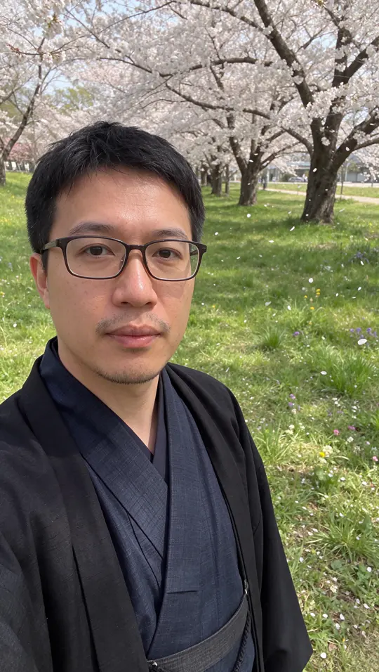

CJ Chan
Free guide · TWIN · Episode 2
Keep posting.
Without filming.
A personal brand grows on two things: posting consistently, and good content. This is the exact workflow I use to do both without standing in front of a camera. 9 steps, the prompts and the photos are below. Free to read, no email needed.
Episode 1 showed how I built the AI twin. Read that guide here.
What this guide covers
Same person.
Five places. None filmed.
These are the first frames of the episode. Every clip starts from one of them, so the face stays the same while the room, light and outfit change. I do not speak smoothly on camera, so I write the script and the twin says it.
The workflow
9 steps to keep posting.
-
Write the script first. It is the real product.
Good content is what gets views, so spend your time here, not on the tools. Decide the one point of the video yourself. Let AI help you say it clearly. Copy this prompt, fill in the brackets, and keep only the lines that sound like you.
Write a 90-second talking-head script about [my point] for [my audience]. Rules: open with a hook that states the point in one sentence. One idea per sentence. No line longer than 18 words. Give the answer first, then the reason. Include two concrete how-to tips the viewer can use today. End with one clear next step. Do not invent statistics, prices or claims I did not give you. Plain spoken English, contractions are fine. Output a table with two columns: line number and line.
Why: short lines that put the answer first are easy to listen to and easy to understand fast. That matters most if you are not a smooth speaker, and it matters for every viewer who is watching on mute with captions.
-
Cut the script into lines of 10 seconds or less
One line becomes one clip. Cut at the end of a sentence. Make a simple table with four columns: the line, which photo it uses, the one or two words to stress, and what appears on screen. I keep mine in a small text file so I can reuse the layout next episode.
Why: short clips keep the face and lips stable, and a cut at a full stop is invisible.
-
Make four or five first-frame photos in different places
Start from one good front-facing photo of the person. Then generate the same person in a few real-looking rooms: a study, a sofa, a kitchen, a cafe. Use them in turn so the video does not look like one long take.
Photorealistic phone selfie of the person in the reference photo. Identical face, hair and glasses. Wearing [outfit]. Sitting in [room], a lived-in home with a little real clutter, everything in focus. Soft natural daylight from in front of the camera, flat and low contrast, almost no shadows. Shot on an iPhone front camera, vertical 9:16, chest-up, slightly off-centre. Lips closed, relaxed, looking straight into the lens. Natural unretouched skin with visible pores and a little shine, no smoothing, no beauty filter. No text, no watermark.
What changed since episode 1: in episode 1 I used a dark, moody studio look to hide skin flaws. For a talking video that should feel like a phone call, flat light from the front, a real room in focus and visible pores read as more real. The audience has seen too much studio-lit AI.
Keep the mouth closed. The clip then starts from a natural pause, not a frozen open mouth.
-
Change the outfit and the place. No travel needed.

- Same face, new outfit
- Real place, real light
- No flight, no costume
You do not have to fly to Japan to film in Japan. Even if you are wearing something plain while you record the idea, the first frame can put you in something sharp. Change the outfit and the place in the same prompt:
A real photograph, not an illustration or CGI. The same person as in the reference images: identical face, hair, glasses. He is wearing a traditional Japanese men's kimono: a deep charcoal-indigo kimono with a subtle woven texture, a dark grey obi belt, and a black haori jacket over it. He stands in a real spring meadow of fresh green grass dotted with small wildflowers, with a row of large cherry blossom trees in full bloom behind him and soft petals drifting in the air. Soft bright daylight on his face from the front. Shot on an iPhone front camera in vertical selfie framing, chest-up, everything in focus, natural unretouched skin. Lips closed, calm look straight into the lens. No text, no watermark, no other people.
Why it matters: the style of every episode can stay the same, while the outfit and the setting change. That is what keeps a channel from looking like the same video posted again.
Be straight with your audience. Say in the video that it is AI. I do, and I think that honesty is what makes people trust it.
-
Clone your voice once, then set a brisk pace
Clone your voice one time. After that, every episode is typing. Generate each line on its own so you can redo a single line without redoing the rest.
Pace: the default speed of a cloned voice is usually slow. In the tool I use, a speed setting of 40 gave a natural, slightly brisk pace (0 was too slow, 60 too fast). Test one line and listen before you do all of them.
Emphasis: pick one or two words per line that carry the point. Later you will make those louder in the edit.
-
Generate each clip with Seedance 2.0 Mini at 720p
Settings: Seedance 2.0 Mini · 720p · vertical 9:16 · start frame: the photo for that line · audio reference: that line’s voice clip · length: the audio length rounded up, plus one second.
Handheld iPhone front-camera selfie video, vertical. The man in the start frame looks into the lens and speaks to the camera, saying exactly these words and nothing else, in English only, lips synced to the reference audio and in that same voice: "<your line>". He begins with his lips closed and starts speaking after a very short beat. Natural blinking, small head movements and light hand gestures, relaxed, conversational, brisk energetic delivery; he raises his voice and energy slightly on the words "<stress words>". Keep the same face, glasses, clothes and room, natural light, soft phone-video quality, quiet room ambience, no music, no subtitles, no text, no other people.
Why paste the exact line: if you do not, the model says the line in its own words. Ask it to raise the voice on the stress words so the delivery has some life.
Region note: model availability differs by country. Check which Seedance models you can use where you are before you plan around them.
Plan for the queue: many tools only run a few jobs at once. Send eight clips, wait, then send the next eight.
-
Check every clip before you edit
Do not trust a clip because it looks good. Transcribe each one and compare it to your script. I use the free Whisper model:
pip install faster-whisper from faster_whisper import WhisperModel model = WhisperModel("small.en", device="cpu", compute_type="int8") segments, _ = model.transcribe("clip.mp4", word_timestamps=True) print(" ".join(w.word for s in segments for w in s.words))In this episode two clips were wrong. One clip turned “personal brand” into “personal Brandon”. Another one, in the Japan scene, spoke Chinese instead of English. The fixes were to generate again, add “pronounce the word brand clearly” to the first, and write “English only, never any Chinese” plus a stronger language instruction to the second. Always keep two takes of a risky line.
Why: a wrong word in the middle of a video costs more than the time it takes to check.
-
Edit: trim, captions, stress, music
- Trim the start. Each clip has one to three seconds of silence. Cut in about a quarter second before the first word.
- Captions that move. Show the word being spoken with a red background. Spoken words go back to normal, upcoming words are faded.
- Stress words. Make them bigger on screen and about 3 dB louder in the audio.
- Change something every 2 seconds. A card, a zoom, a chart or a side-by-side. Use a real picture where you can, not only text.
- Music under the voice. Lower it by about 15 dB, let the voice push it down, and fade out for the last 2 to 3 seconds.
- Check the result. Look at 10 to 15 frames for covered faces or cut-off words, then transcribe the finished video again.
Why: the talking head is one still picture. The edit is what keeps people watching to the end.
My hands-on time for this episode was about two hours: writing the script and the edit. The clips take about another two hours to generate, and I do other work in the meantime.
-
When you are busy, let someone else run your IP
Once the photos, the voice and the workflow exist, anyone can make the next episode with them. You do not have to be on camera, and you do not have to do the production yourself. You decide what the video says. That is how a channel keeps posting when you do not have the time.
Why: consistency beats perfection. Posting every week with a clear point is worth more than one perfect video every two months.
Want it made for you?
Not enough time?
I’ll make it for you.
Only if you want to. Tell me what you need: an AI twin, a talking video, or a full edit, and I reply by email within 1 business day. Nothing here asks for your email otherwise.